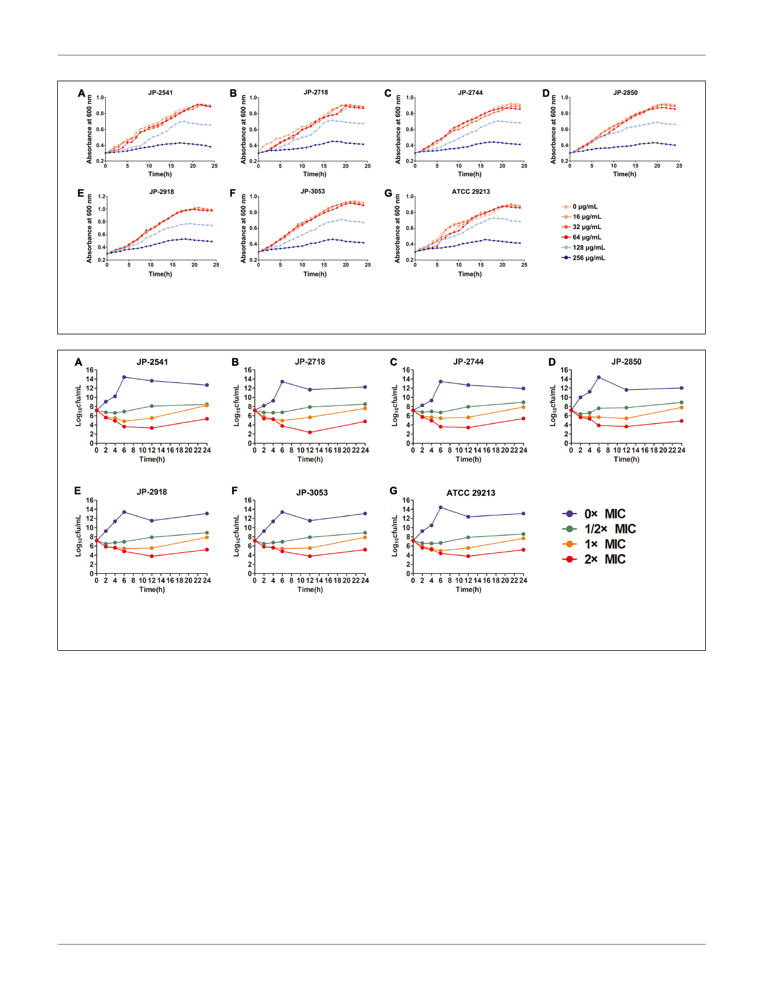

Zheng et al.
Activities of Chinese Dragon’s Blood
FIGURE 1 | Effects of different concentrations of CDB on the growth of Staphylococcus aureus. (A) growth curves for JP-2541; (B) growth curves for JP-2718;
(C) growth curves for JP-2744; (D) growth curves for JP-2850; (E) growth curves for JP-2918; (F) growth curves for JP-3053; and (G) growth curves for S. aureus
ATCC 29213.
FIGURE 2 | Time-kill curves of different concentrations of CDB against Staphylococcus aureus. (A) time-kill curves for JP-2541; (B) time-kill curves for JP-2718;
(C) time-kill curves for JP-2744; (D) time-kill curves for JP-2850; (E) time-kill curves for JP-2918; (F) time-kill curves for JP-3053; and (G) time-kill curves for
S. aureus ATCC 29213.
90% of its dry weight (Jones, 2003; Al-Fatimi, 2018; Pona et al.,
2019). Proanthocyanidin, as a final product of the flavonoid
biosynthetic pathway, is known to effectively prevent and cure
bacterial infections (Rauf et al., 2019). Also, these phenolic
compounds can be easily degraded (Escobar et al., 2018). As
shown in Figure 2, S. aureus exhibited remarkably increased cell
growth at all concentrations of CDB after treatment for 12 h,
which is consistent with previous reports. This phenomenon
reminds us that we should pay attention to such time-dependent
characteristics when using CDB in clinical settings.
Previous studies have confirmed that in the environment of
chronic infected wounds, the formation of bacterial biofilms
could make the bacteria more adaptable to the external
environment by increasing the adhesion to the wound surface
and evading the host’s immune function (Krychowiak et al.,
2014). In addition, the biofilm structure could significantly
enhance the pathogen’s resistance to antibiotics by preventing
the drugs from entering the bacterial cell, which is the main
reason for persistent inflammation of the wound and difficulty
in healing (van Wamel, 2017). Therefore, it is essential to find
compounds that could inhibit the formation of biofilms. In our
study, crystal violet biofilm assay and SEM analysis revealed
that sub-inhibitory concentrations of CDB could effectively lower
the biofilm formation ability of S. aureus. Biofilm formation
of S. aureus is an important factor that determines the wound
healing process and patient mortality (Bhattacharya et al., 2015;
Roy et al., 2020). Besides, Tsung-Jung Ho et al. confirmed that
CDB could stimulate angiogenesis and promote cell proliferation
and migration (Ho et al., 2016). We speculated that these
might be the important reasons for CDB promoting the wound
healing process.
In addition to biofilm formation, virulence factors of S. aureus
play crucial roles in wound healing either directly or indirectly.
Among the various virulence determinants, alpha-hemolysin
5